Tout Pour Apprendre La Langue Française
Introduction:
On vous a sûrement répété à plusieurs reprises que le français était une langue difficile. Non, le français n’est pas plus difficile que l’anglais, l’allemand ou tout autre langue. En ayant les bons outils, il est tout à fait possible de rendre votre apprentissage du français agréable. Voici 10 conseils qui pourront vous être utiles dans votre initiation.
les sources dont vous avez besoin :
- Les Applications :
- Babbel 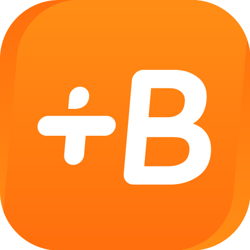
- mondly
- Busuu
- mosalinga 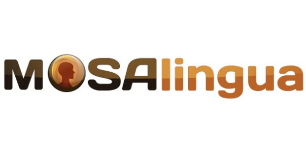
- fluento
- duolingo 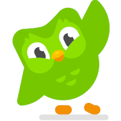
- Les Sites web :
- Bonjour de france
- Français avec Pierre
- Français Facile 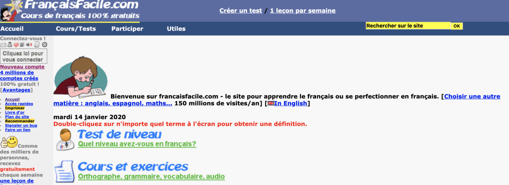
- TV5 Monde
- FUN MOOC 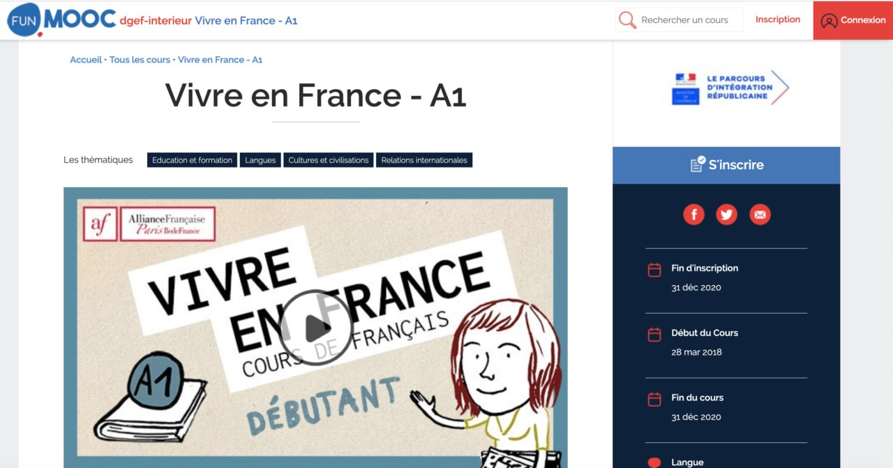
- Les chaînes YouTube :
- Oh La La, I Speak French! 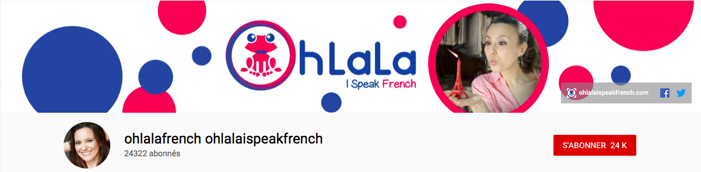
- Learn French with Gaëlle 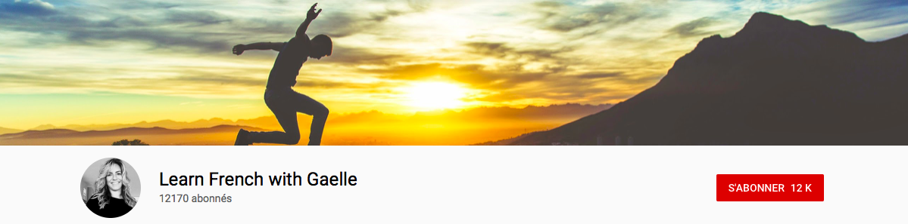
- Français authentique 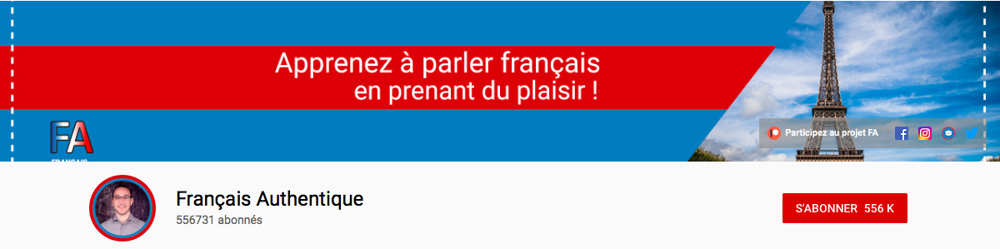
- Le Français avec Pascal 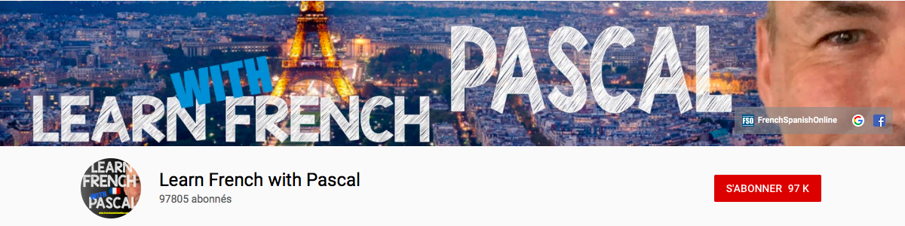
- Les livres :
- Bescherelle 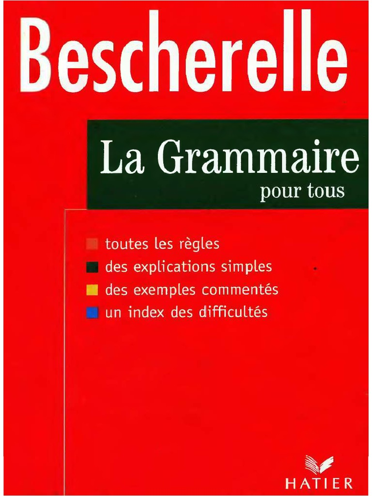
- Grammaire progressive du français 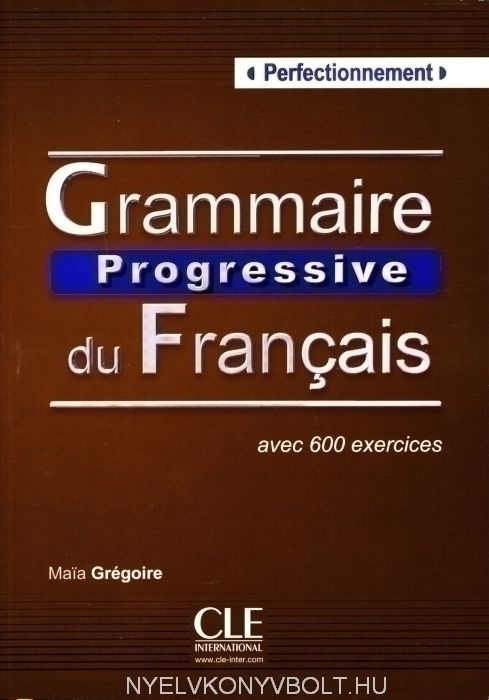
- Le français correct 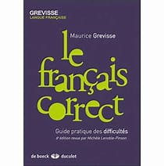
- Eazy frensh Step by Step 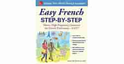
Quand on pense à des cours de langues par application mobile, on pense souvent à Babbel. Incontournable, cette entreprise a été créée en 2007 et est devenue une référence mondiale. Elle propose le français en plus d’une quinzaine d’autres langues. Babbel fait travailler sur quatre volets de la langue française : grammaire, vocabulaire, compréhension orale, expression orale. L’utilisateur définit son niveau au début de l’apprentissage, entre débutant ou avancé. Le vocabulaire est appris par répétitions associées à un système de reconnaissance vocale et des traductions. L’application Babbel aide à gravir les échelons des niveaux du cadre européen commun de référence pour les langues (CECRL). Ce sont les niveaux A1, A2, B1, B2, C1 et C2. Idéale pour les non-francophones débutants, elle permet d’atteindre le niveau B2, soit une utilisation courante du langage français. Vous pourrez retravailler toutes les leçons précédentes pour réviser, notamment les phrases les plus difficiles. En compréhension orale, les dialogues écoutés couvrent des sujets de la vie quotidienne. L’apprentissage est pensé pour vous conférer la capacité d’interagir à l’oral avec des Français natifs, en étant à l’aise. Du côté des tarifs, on ne peut pas dire que Babbel soit chère : 1 mois : 12,99€, 3 mois : 10€ par mois, 6 mois : 7,50€ par mois, 12 mois :5€ par mois.
Cette application pour apprendre le français utilise une méthodologie intéressante : faire des exercices ludiques pour apprendre la grammaire, le vocabulaire et l’expression/compréhension écrite ou orale. Tout ça en seulement quelques minutes par jour ! Accessible à tous, Mondly vous propose des cours peu importe votre niveau. Par conséquent, vous progressez graduellement et à votre rythme. L’application intègre également la reconnaissance vocale pour vous aider à avoir un accent et une prononciation parfaite ! En ce qui concerne les tarifs, vous aurez le choix entre un abonnement à9,99€ pour un mois, et47,99€ pour une année. L’application propose également de nombreuses offres, tout au long de l’année. Sinon, vous pourrez aussi choisir la version « abonnement à vie », à 60€, pour profiter de l’application toute votre vie. Apprendre le français avec Mondly
Busuu s’affiche souvent sur le podium des applications pour apprendre les langues les plus connues. Le programme met l’accent sur le social learning, c’est-à-dire la possibilité d’avoir des conversations avec d’autres utilisateurs. L’application dispense des cours accessibles à tous les niveaux, du débutant (A1) à l’intermédiaire avancé (B2). Les leçons peuvent être thématiques et chacune contient des règles de grammaire et de nouveaux mots de vocabulaire. Un système de correction est également intégré. C’est en outre une application très complète qui agit à tous les niveaux (prononciation, écriture, lecture, grammaire, orthographe). Le but est de valider une leçon par jour. En revanche, si l’appli paraît gratuite au début, elle devient ensuite payante. Il faudra donc débourser 30,99€ à l’année, pour la version « Premium ». Il existe aussi une version « Premium plus », disponible pour environ 6,50€ par mois.
MosaLingua est un mastodonte des applications d’apprentissage de langues. En effet, cette petite application multi-plateformes dispense des cours selon une méthode qui a fait ses preuves au niveau scientifique : la répétition espacée. L’application a ainsi pour objectif de vous aider à mémoriser des mots en se servant d’exercices de vocabulaire. Pour ce faire, MosaLingua utilise un panel de 3 000 cartes comportant des mots et phrases clés, qui vous seront répétées de façon inattendue au fil de votre évolution dans les niveaux, pour vous aider à mémoriser le maximum de mots possible. Pour s’attacher ces services, il vous faudra débourser 9,99 € par mois, ou opter pour la formule 12 mois à 59,99 € (soit 4,99 € par mois) !
FluentU est une application assez novatrice. En effet, elle casse avec les codes d’apprentissage en proposant tout bonnement d’apprendre le français grâce à des podcasts et autres formats d’information numérique. Plusieurs types d’outils sont proposés au sein de FluentU, allant de vidéos de sujets légers tels que les clip musicaux, à des plus carrés comme l’actualité et les annonces publicitaires. Ce type de formation pallie à l’une des problématiques de l’apprentissage des langues. Effectivement, après des jours et des jours d’apprentissage, lorsqu’on est mis en situation réelle, les blancs durant les phases de conversations se feront plus rares. Pour vous aider à y aller progressivement, chaque vidéo a un script détaillé, de telle manière que vous sachiez quel terme signifie ceci ou cela. Enfin l’application a un coût, puisque seules les deux premières semaines d’utilisation sont gratuites. Il faudra par la suite vous acquitter de15par mois ou120€ par an pour continuer à utiliser FluentU.
est l’une des solutions d’apprentissage linguistique en ligne les plus connues. À l’origine totalement gratuite, elle se rémunérait en faisant contribuer ses utilisateurs à la traduction de sites web. Même si des options premium existent aujourd’hui, le cœur de l’application est toujours là : des sessions courtes et ludiques pour s’entraîner à écrire, comprendre et parler en seulement 10 minutes par jour. Les francophones pourront apprendre l’anglais, l’espagnol, l’italien, l’allemand et le portugais grâce à Duolingo. Ceux qui parlent en outre déjà bien l’anglais auront un choix beaucoup plus large de langues disponibles. La base de l’application reste gratuite et n’oblige pas à s’inscrire. On peut cependant créer un avec Google, Facebook ou une adresse e-mail pour accéder à certains éléments comme les ligues ou pour faire des achats. En outre, Duolingo fait la part belle à la gamification avec des succès, un système d’amis, des séries quotidiennes, etc. Tant d’éléments qui motivent à relancer l’application tous les jours.
Le site internet Bonjour de France met à disposition, gratuitement, de nombreuses offres d'initiation au français. Créée en 1998, cette plateforme constitue un excellent outil pour démarrer l’apprentissage : des fiches pédagogiques sont régulièrement éditées, et des tests de niveau sont disponibles pour s'auto-évaluer ! La rubrique « Magazines » est particulièrement intéressante : retrouvez tous les mois des thèmes, traités de manière approfondie, pour vous familiariser avec la culture française.
Le Blog de ce site web est passionnant : vous y trouverez des vidéos ludiques, qui vous permettront d’améliorer vos connaissances sur les us et coutumes français. Français avec Pierre commercialise aussi des cours de français payant, au tarif de 49 €, et des livres de perfectionnement sur la langue. En achetant une leçon de français sur ce site, vous aurez accès à l’Académie : cette plateforme représente l’occasion d’échanger avec les autres élèves, et de progresser plus vite ! La dimension ludique présente dans l’ensemble des contenus du site rend plus facile la mémorisation !
Français Facile fait partie des sites les plus connus pour apprendre le français. Vous y trouverez un très large choix d’exercices, portant sur une multitude de sujets de grammaire et de conjugaison. Les exercices sont accessibles pour tous, gratuitement. Commencez par jauger votre niveau en effectuant un test : observez-vos lacunes, et travaillez-les par la suite ! Vous pourrez poser toutes vos questions aux autres internautes sur le forum, particulièrement actif ! Inscrivez-vous à la newsletter pour recevoir, chaque mois, de nouvelles thématiques à mémoriser.

La chaîne de télévision TV5MONDE met la simplicité d'apprentissage au centre de son offre linguistique. De nombreux exercices sont proposés, depuis le niveau A1 (débutant) jusqu’au niveau C1 (avancé). Les thématiques d’apprentissage sont variées : culture, droit humain, gastronomie, histoire, actualités, géopolitique, science ou encore innovation. Vous cherchez des points spécifiques à travailler ? Rendez-vous dans la rubrique « Découvrir ». Par exemple, les adjectifs de couleur s'accorde-t-il en genre et en nombre avec le nom ? Quelle est la différence entre amende et amande ? Retrouvez les réponses à toutes vos questions dans cette section. La rubrique « Voyage » permet de travailler son écoute : des vidéos d’actualités en français y sont postées. Vous souhaitez transmettre votre savoir sur la langue ? TV5 Monde donne librement accès à un grand nombre de fiches et d’exercices : l’idéal pour enseigner à un élève ou un ami ! Des formations en tout genre sont aussi proposées. Jouer avec la langue française est un excellent moyen d’apprentissage ! De nombreux jeux nécessitant de manier les lettres de l’alphabet sont proposés : c'est l'occasion de vous lancer dans la pratique du français !
Fun MOOC est une plate-forme web, spécialisée dans la distribution de cours donnés dans les universités les plus prestigieuses du monde. Lancé avec le soutien de l'Alliance Française Paris Île-de-France, vous y trouverez d’innombrables vidéos pour apprendre des rudiments de français ! Vous avez désormais toutes les cartes en main pour commencer votre apprentissage de la langue de Molière, et en devenir expert !
Cette chaîne YouTube fait apprendre le français à des anglophones tout en découvrant la culture française. En effet, des playlists permettront d’apprendre le français aux différents niveau de langues, des débutants aux apprenants ayant déjà un certain niveau. Une chaîne très instructive ! Learn French while discovering French culture !
Gaëlle vous apprend le français simplement et avec plaisir ! Habitant près de Nice, dans le sud de la France, elle vous propose d’apprendre tout en découvrant sa superbe région. Gaëlle teaches you French and makes you discover the South of France.
Cette chaîne s’adresse aux apprenants ayant déjà un certain niveau de langue. Par ailleurs, elle est présentée par Johan qui apprend à parler le français tel un locuteur natif. Une chaîne idéale si vous cherchez à appréhender le français à un niveau supérieur ! You have already a good level of French ? Perfect it with Johan’s videos !
Suggéré par Gabriela, lectrice du Café du FLE. Une chaîne youtube très complète animée par Pascal. Improve your French, grammar, pronunciation, tips with Pascal.
Véritable institution pour les Français depuis 1913, le Bescherelle propose l’ouvrage collectif La conjugaison pour Tous (Hatier) mais aussi des fascicules consacrés à l’orthographe, au vocabulaire, etc. Identifiable aisément par tous les écoliers de l’Hexagone grâce à sa couleur rouge, cette collection d’ouvrages a été créée au 19e siècle par deux grammairiens célèbres, Louis-Nicolas et Henri BESCHERELLE. Le Bescherelle est réputé pour ses tableaux de conjugaison, ses cartes mentales et ses listes de verbes de référence à partir desquels se conjuguent les autres verbes. Sachant qu’il y a plus de huit mille verbes répertoriés, on comprend les raisons de son succès !
Ecrit par Maïa GRÉGOIRE et Odile THIEVENAZ, La Grammaire progressive du français (Clé International) fait partie des meilleurs livres pour apprendre la grammaire française et s’adresse aux personnes désireuses d’améliorer leur niveau. Le livre a le mérite d’avoir une présentation vivante : la leçon, présentée sur la page de gauche, est suivie d’exercices d’application sur la page suivante. Dans son édition la plus récente, il comprend près de 150 tests autocorrectifs et près de 300 exercices interactifs en ligne. Le point fort de cet ouvrage est son côté clair et structuré qui explique que bien des enseignants l’utilisent pour leurs cours ! En outre, il est adapté aux adeptes de l’auto-apprentissage et existe pour tous les niveaux.
Quelle est la différence entre « notable » et « notoire » ou entre « se rappeler de » et « se souvenir » ? Le Français correct pour les Nuls de Jean-Joseph JULAUD (éditions First) est un livre écrit par un ancien professeur de français. Cet ouvrage reprend les grandes règles de grammaire et de vocabulaire. Vu son format compact, il peut se glisser dans un sac, ce qui est bien pratique quand on veut le consulter à tout moment ! Sa lecture fort ludique vous évitera de tomber dans les pièges de la langue française. Grâce à des tests d’évaluation, vous pourrez également mesurer vos progrès sur les accords, les conjugaisons, etc. Bref, un livre bien pratique à consulter tous les jours.
Quel est le meilleur livre pour apprendre le français pour les débutants ? Easy French Step-by-Step de Myrna BELL ROCHESTER (McGraw-Hill Contemporary) est un livre très complet plutôt axé sur les compétences grammaticales et pouvant être utilisé par les débutants. Chaque chapitre propose des points grammaticaux clairement expliqués, des activités de renforcement, des textes courts pour s’entraîner à la compréhension écrite mais aussi des listes de mots-clés. C’est un livre clair et accessible qui permet une progression par étapes et permet aux apprenants d’évaluer peu à peu leurs acquis.